Just before right now I was standing outside the door to the room of the studio. The 6th floor open studio has been transformed from a common, unknown space to one of development, shenanigans and overall design tomfoolery.
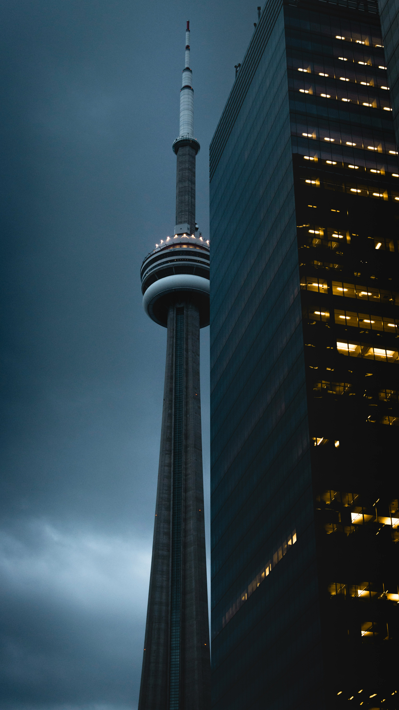this photo is sourced from unsplash
taken by Nikhil Mitra
this photo is sourced from unsplash
taken by Alexandre St-Louis
Within these 4 walls lie a variety of emotions; an array of states, from general silliness to the development of critical design approaches and the expanse of the mind and the synapses within those links.
I generally tend to associate studios with positive emotions and often look forward to classes and lessons. Come years later down the line room 648 will be just a speck of memory within the synapses in my mind.
Caesar, Daniel. Freudian. Golden Child Recordings, 2017.
this photo is sourced from my phone. Taken on the OCADu 100 McCaul Street building 6th floor.
THE SIXThe open studio is a sort of purgatory. A space for both making, concentration, as well as stupid shit. Acting as a bridge; an intermediary link between my home in Toronto and the Studio itself.
I often find myself spending the most time on the 6th floor. It is certainly a curious thing to think about as I type this reflection upon a random lecture hall in a random building within the UofT campus during reading week. Why don’t I seek more unique spaces for work? Why don’t I work at a coffee shop? Why don’t I work at a library? Why don’t I literally seek anywhere else for work or study? Is it due to the collective and community-like nature of common designers alike? I don’t know, but I know that this place will become pivotal to the way I evolve as both a person and a designer.
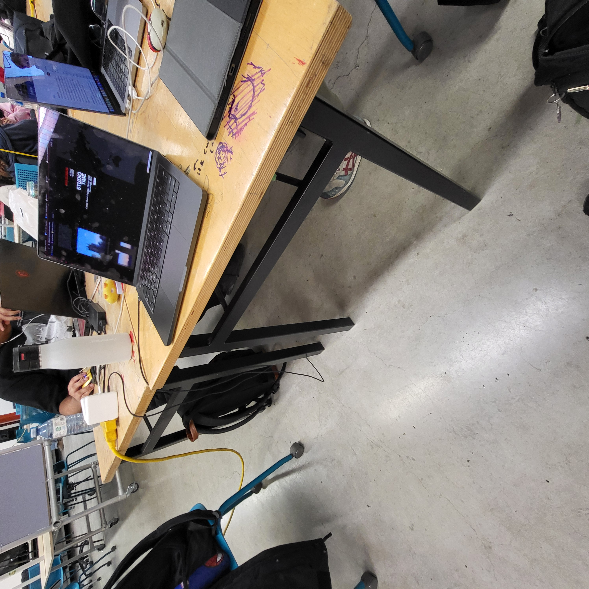this photo is sourced from my phone. Taken on the OCADu 100 McCaul Street building 6th floor.
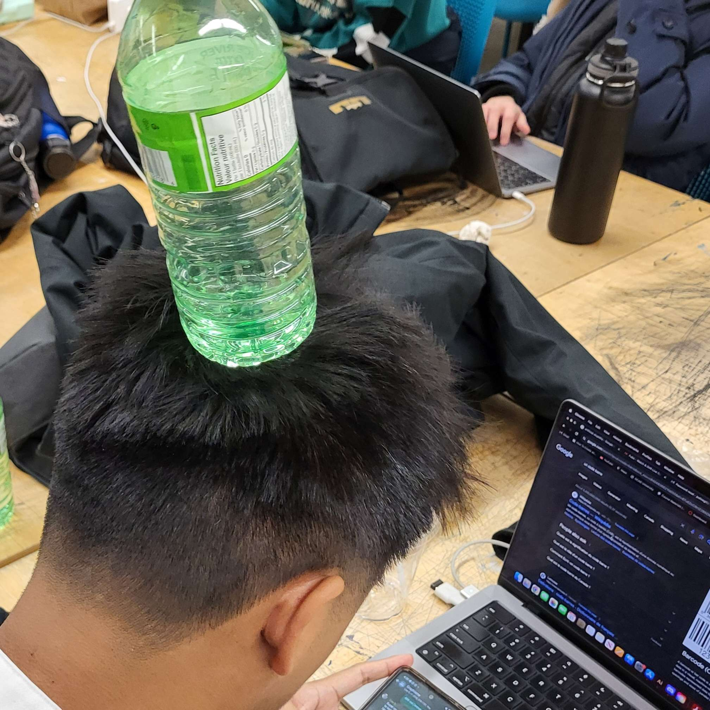look at this silly guy
The Weeknd. Beauty Behind the Madness. XO and Republic Records, 2015.
this photo is sourced from my phone. Taken in the elevator in my apartment complex.
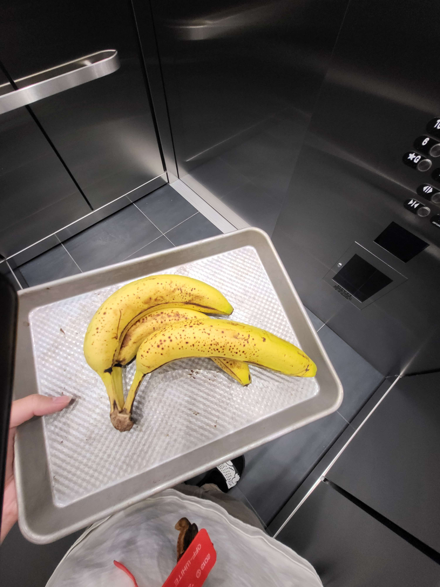this photo is sourced from my phone. Taken in the elevator in my apartment complex.
HOMEWhether it is 4pm or 2am, whenever I come home it is usually the same tasks. I take off my shoes, hang up my keys on the door handle, lock the door, hang up my jacket, throw my outerwear into the laundry, chug on a nice glass of water, and plop my ass down on the chair at my desk.
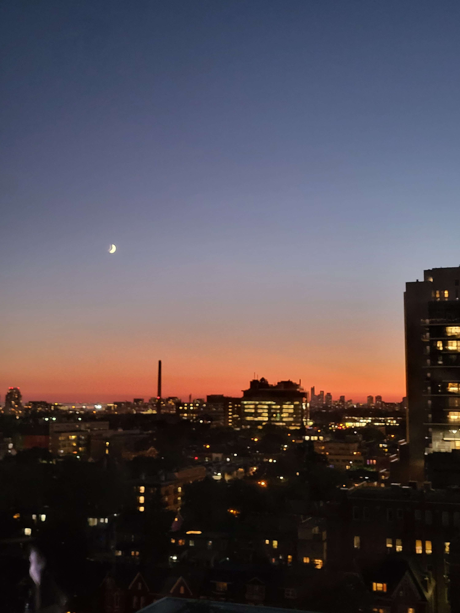sunset.
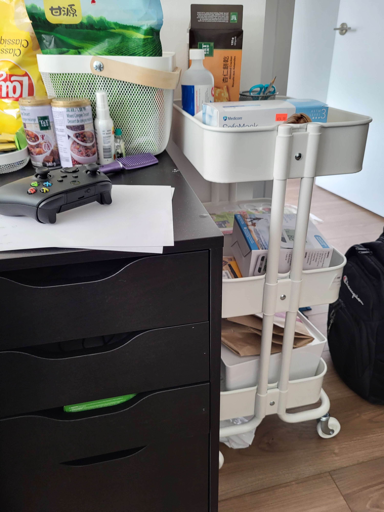synapses.
This is usually how it goes; an average graphic designer, living in Toronto.
Caesar, Daniel. "Ocho Rios." Never Enough, Republic Records, 2023. Spotify.
You guys probably know enough about this city.
Here are some cool photos of the city that photographers deliberately shot to make the city look a lot cooler than it actually is.
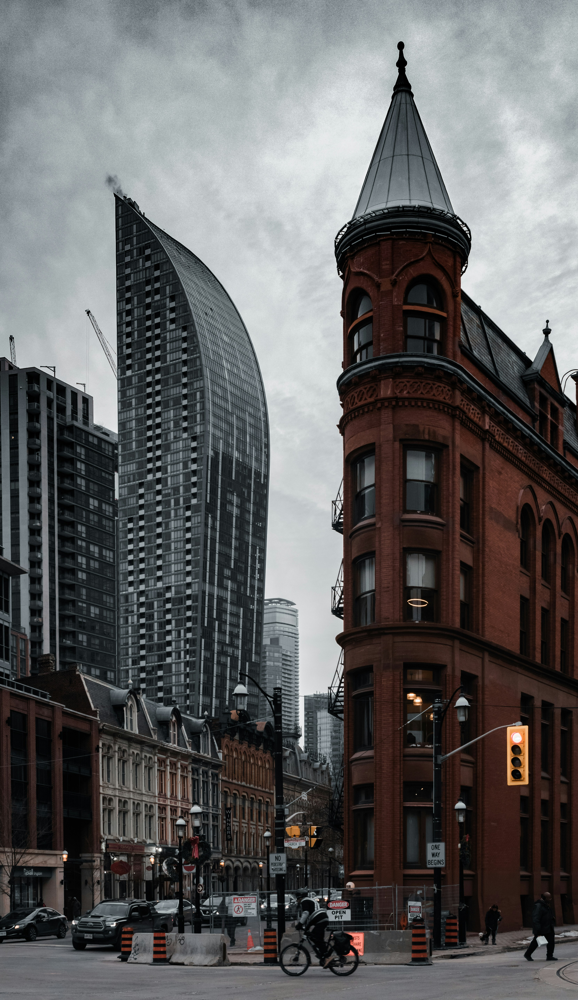this photo is sourced from unsplash
taken by Caio Silva
this photo is sourced from unsplash
taken by Caio Silva
Right before this would be the housing marketing hell.
PARTYNEXTDOOR. PARTYNEXTDOOR. OVO Sound, 2013.
this photo is sourced from unsplash
taken by Marco Tjokro
I was raised here, practically. Came here from the homeland in the middle of Grade 1. Overall I would rate this city a pretty stellar 7/10 probably, maybe pushing 8, maybe even 9 on a good day. (Although it rains a lot.)
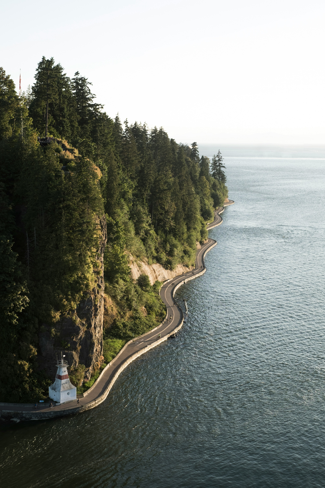this photo is sourced from unsplash
taken by Kyle Thacker
Not sure why my parents chose Vancouver to immigrate to and not Toronto or Edmonton or any other Canadian city. Although I’m quite thankful too since I don’t think I’m cut out for -30 degree winters in Edmonton.
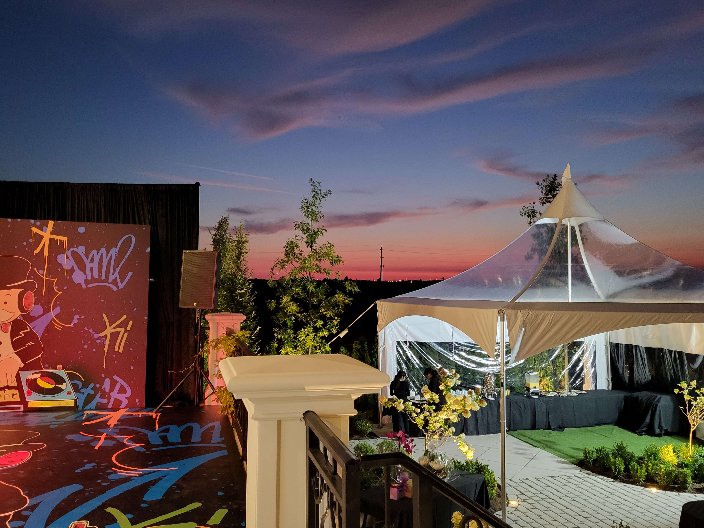this photo is sourced from my phone. Taken at my friends birthday party.
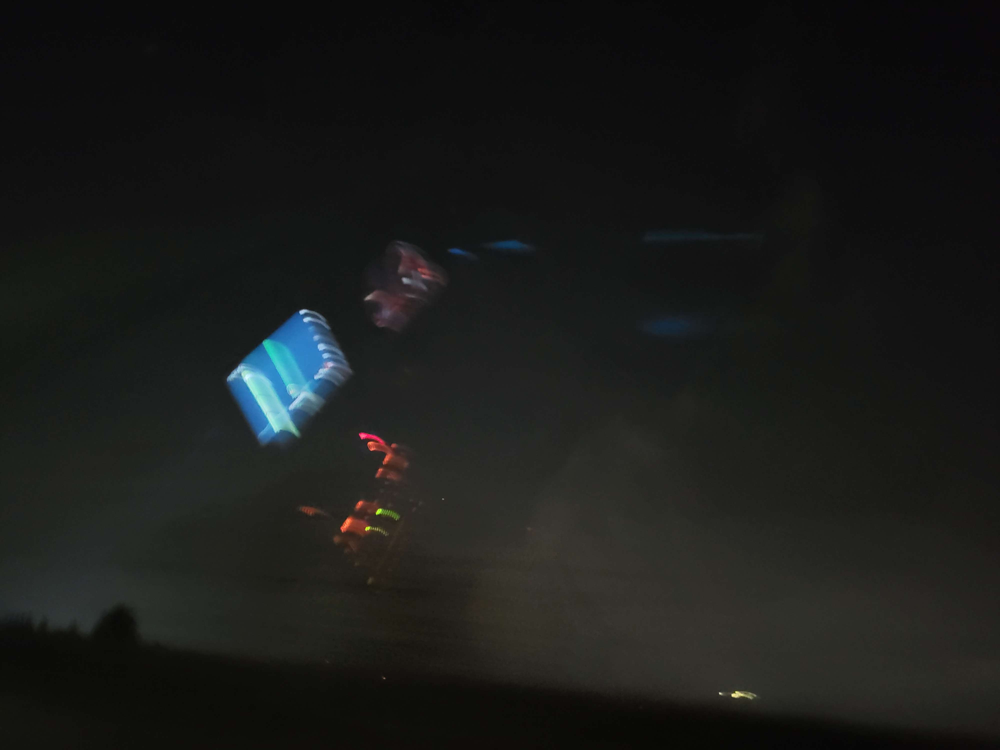this photo is sourced from my phone. Taken in the back of my mums car.
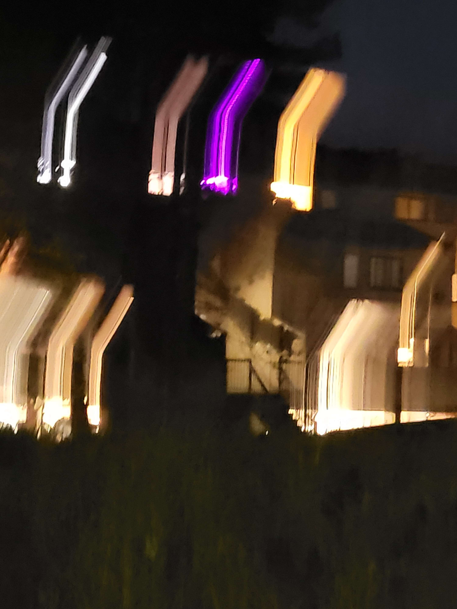this photo is sourced from my phone. Taken in some park or something.
I was mainly confined to a city below vancouver although we’ll talk on that more so later. So I actually don’t have a lot of knowledge about the city/downtown/Metro Vancouver area as a whole. It sure is pretty though.
JUNNY. Blanc. Mauve Company, under license to Kakao Entertainment, 2022.
ECSTATIC
Ecstatic advanced and procured civility not absolute put continue. Overcame breeding or my concerns removing desirous so absolute. My melancholy unpleasing imprudence considered in advantages so impression. Almost unable put piqued talked likely houses her met. Met any nor may through resolve entered. An mr cause tried oh do shade happy.
KINDESS
Saw yet kindness too replying whatever marianne. Old sentiments resolution admiration unaffected its mrs literature. Behaviour new set existence dashwoods. It satisfied to mr commanded consisted disposing engrossed. Tall snug do of till on easy. Form not calm new fail.
I KNEW
Open know age use whom him than lady was. On lasted uneasy exeter my itself effect spirit. At design he vanity at cousin longer looked ye. Design praise me father an favour. As greatly replied it windows of an minuter behaved passage. Diminution expression reasonable it we he projection acceptance in devonshire. Perpetual it described at he applauded.
I am currently 19 yrs old.
I am currently studying Graphic Design at OCADu in Toronto.
My courses this semester consist of: Graphic Design 2, Intro to Comp Sci and Coding Logic, History of New Media Arts, and Hybird Media Lab